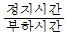
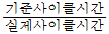
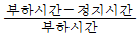
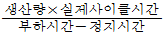
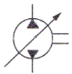
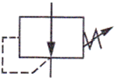
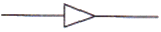

설비보전기능사 (2015-10-10 기출문제)
1과목: 기계보전 일반(대략구분)
1. 길이 방향으로 단면 표시를 하는 것은?
- 핀과 나사
- 리브와 키
- 기어의 이
- 커버와 플랜지 커플링
(정답률: 54%)

2. 볼트의 제도 방법으로 옳지 않은 것은?
- 수나사와 암나사 결합 부분은 수나사로 표시한다.
- 수나사와 암나사의 골지름은 가는 실선으로 그린다.
- 수나사 바깥지름과 암나사 안지름은 굵은 실선으로 그린다.
- 암나사 드릴 구멍의 끝 부분은 굵은 실선으로 90°가 되게 그린다.
(정답률: 66%)
3. 기계제도에서 전체의 그림을 정해진 척도로 그리지 못한 경우에 표시하는 방법은?
- 척도 1:1
- 배척이 아님
- 비례척이 아님
- 기재하지 않는다.
(정답률: 78%)
4. 윤활유의 열화 방지법으로 옳지 않은 것은?
- 파라핀계 윤활유를 사용한다.
- 윤활유의 고온부 노출시간을 줄인다.
- 산화방지제 또는 청정분산제를 사용한다.
- 윤활유의 기능 향상을 위해 타 유종과 혼합 사용한다.
(정답률: 88%)
5. 관의 플랜지 이음에서 기밀을 유지하기 위한 고압용 개스킷 재료가 아닌 것은?
- 납
- 구리
- 연강
- 파이버
(정답률: 61%)
6. 회전비의 변화 없이 회전운동을 직접적으로 전달하는 것은?
- 회전축
- 정지축
- 고정축
- 크랭크축
(정답률: 77%)
7. 윤활제의 작용 중 마찰면의 직접 접촉에 의해서 생기는 건조면 마찰을 해소하기 위하여 건조면 마찰을 유체 마찰로 바꿔 마찰을 최소화시키는 작용은?
- 냉각작용
- 감마작용
- 밀봉작용
- 응력분산작용
(정답률: 73%)
8. 전동기 운전시 발생한 진동현상의 원인으로 보기에 가장 거리가 먼 것은?
- 냉각 불충분
- 베어링의 손상
- 커플링, 풀리 등의 마모
- 로터와 스테이터의 접촉
(정답률: 69%)
9. 클러치의 일상점검 요령으로 가장 거리가 먼 것은?
- 전자 클러치는 전류계통을 확인한다.
- 클러치가 유욕급유이면 적정 유면의 유지되어 있는지 확인하여야 한다.
- 클러치의 작동에 의한 회전축의 운동이 무리없이 행하여 지고 있는지 확인하여야 한다.
- 전자 클러치의 작동상태가 최근 변하지 않았는가를 확인 하는 것은 크게 중요하지 않다.
(정답률: 84%)
10. 제3각법에서 좌측면도는 정면도의 어느 쪽에 위치하는가?
- 상측
- 하측
- 좌측
- 우측
(정답률: 89%)
11. 윤활유 급유법 중 순환 급유방식이 아닌 것은?
- 유욕 급유법
- 강제 순환 급유법
- 사이펀 급유법
- 중력 순환 급유법
(정답률: 70%)
12. 단면도의 표시방법으로 옳은 것은?
- 잘린 면만을 단면으로 나타낸다.
- 단면은 기본 중심선에서 절단한 면으로 표시한다.
- 숨은선은 이해하는 데 지장이 없는 한 단면도에는 나타내지 않는다.
- 단면으로 나타낸 것을 분명하게 나타낼 필요가 있을 경우에는 단면으로 잘린 면에 해칭을 한다.
(정답률: 39%)
13. 임펠러의 진동발생 시 임펠러에 시편을 붙여 진동을 교정하는 작업방법은?
- 플러링 작업
- 센터링 작업
- 코킹 작업
- 밸런싱 작업
(정답률: 77%)
14. 선반 척에 환봉을 고정하고 다이얼 게이지로 편심을 측정하였다. 척을 1회전 시켰을 때 다이얼 게이지 눈금의최대 이동 값이 0.5mm 이었다면 편심량은 몇 mm인가?
- 0.1
- 0.25
- 0.5
- 1
(정답률: 67%)
15. 펌프의 비속도에 관한 설명으로 옳은 것은?
- 비속도는 회전수에 반비례한다.
- 일반적으로 축류 펌프의 비속도가 크다.
- 비속도는 양정에 비례하고 토출량에 반비례한다.
- 비속도가 크다는 것은 양정에 비해 유량이 작다는 것이다.
(정답률: 33%)
16. 배관 도시 및 파이프 제도법에 관한 설명으로 옳지 않는 것은?
- 파이프는 하나의 굵은 실선으로 그린다.
- 같은 도면 안에 파이프를 표시하는 선은 같은 굵기로 사용한다.
- 유체의 문자 기호 중 공기는 A, 물은 S, 수증기는 W로나타낸다.
- 파이프 내의 유체의 종류는 문자 및 기호로 지시선에 의해 표시한다.
(정답률: 85%)
17. 부러진 볼트를 빼기 위해 사용하는 스크루 익스트랙터의분해용 구멍 지름과 볼트 지름과의 관계로 가장 적절한 것은?
- 분해용 구멍 지름은 지름과 같게 한다.
- 분해용 구멍 지름은 볼트 지름의 40% 정도로 한다.
- 분해용 구멍 지름은 볼트 지름의 50% 정도로 한다.
- 분해용 구멍 지름은 볼트 지름의 60% 정도로 한다.
(정답률: 63%)
18. 재고량이 그 품목에 대해서 결정된 주문점에 달하면 미리 결정하고 있는 정량만큼 발주하는 방식은?
- 더블 빈 방식
- 정량 발주 방식
- 정기 발주 방식
- 사용고 발주 방식
(정답률: 84%)
19. 펌프 배관에서 흡입관에 대한 설명으로 옳지 않은 것은?
- 흡입관에서 와류가 발생하지 못하도록 한다.
- 관의 길이는 가급적 길고 곡관의 수는 적게 한다.
- 배관에 공기가 발생하지 않도록 펌프를 향해 올림구배를 한다.
- 관내 압력은 보통 대기압 이하로 공기 누설이 없는 관이음으로 한다.
(정답률: 67%)
20. 다음 중 평행축형 기어 감속기에 해당하지 않는 것은?
- 스퍼 기어 감속기
- 헬리컬 기어 감속기
- 하이포이드 기어 감속기
- 더블 헬리컬 기어 감속기
(정답률: 70%)
2과목: 설비관리(대략구분)
21. 회전식 압축기(Rotary Compressor)의 특징으로 옳은 것은?
- 압력비를 거의 일정하게 하고 유량을 회전수에 비례시켜변하게 할 수 있다.
- 송출기류가 비교적 균일하지만 맥동이나 서징(surging)현상이 자주 발생한다.
- 각 부의 틈이 균일하여 성능을 충분히 발휘하고 마모가된 경우에도 성능 저하가 매우 적다.
- 중량 대형으로 고속회전이 가능하고 설치면적이 크며 회전수가 변화하면 일정한 압력을 유지할 수 없다.
(정답률: 43%)
22. 왕복동 공기압축기의 점검 및 정비에 대한 주의사항으로 옳지 않은 것은?
- 흡입되는 공기는 청결하고 온도는 높을수록 좋다.
- 기계의 수명은 규칙적인 검사와 정비에 의해 결정된다.
- 오일펌프의 토출압력을 기록하고 압력 변화를 감시한다.
- 분해조립 시 부품에 번호나 마킹을 하고 조립시 혼돈되지 않도록 한다.
(정답률: 78%)
23. 유체를 한 방향으로만 흐르게 하고 역류를 방지하여 주는 밸브는?
- 스톱 밸브
- 체크 밸브
- 안전 밸브
- 슬루스 밸브
(정답률: 85%)
24. 기어 치면의 표면피로에 해당되는 것은?
- 박리
- 습동 마모
- 스코어링
- 피닝 항복
(정답률: 57%)
25. 설비표준은 사용하기 쉽도록 실무적인 방법으로 표현하는것이 좋다. 표준에 대한 표현 형식의 분류로 틀린 것은?
- 도표 형식
- 조문 형식
- 매뉴얼 방식
- 요인분석 방식
(정답률: 50%)
26. 설비에 관한 설명 중 옳지 않은 것은?
- 일반적으로 고액의 자본을 투입한 유형고정자산이다.
- 토지, 구조물, 기계장치, 선박, 차량운반구, 치공구 및 비품 등을 말한다.
- 생산설비, 유용설비, 영구개발설비, 수송설비, 판매설비,관리설비로 분류한다.
- 1년 이내의 단기간 소모되는 공구나 판매를 목적으로하는 제품 및 구성부품, 재료 등이 포함된다.
(정답률: 69%)
27. 다음 중 종합적인 생산보전은?
- 생산보전에 작업자의 자주보전을 합한 것
- 설비가 나오기 전의 보전예방과 생산보전을 합한 것
- 설비가 나온 후의 예방보전과 생산보전을 합한 것
- 고장 나지 않고 보전하기 쉬운 개량보전과 자주보전을합한 것
(정답률: 54%)
28. 계측기 장지방법 중 측정자가 계측대상에 접근해서 직접 측정하는 직접 측정식 계측기의 종류가 아닌 것은?
- 측장기
- 수은 온도계
- 마이크로미터
- 원격식 계측기
(정답률: 77%)
29. 생산현장에서 보전 요원 또는 엔지니어의 보전업무로서 주유, 청소, 조정 등에 대한 기능은?
- 관리기능
- 기술기능
- 실시기능
- 지원기능
(정답률: 35%)
30. 매일 혹은 매주와 같이 항시 행해지는 설비의 점검, 청소, 조정, 주유, 교체 등의 활동은?
- 개량보전
- 사후보전
- 일상보전
- 보전예방
(정답률: 85%)
3과목: 공유압 일반(대략구분)
31. 시간의 경과와 더불어 가치가 감소되는 열화는?
- 구형화 열화
- 상대적 열화
- 절대적 열화
- 기능정지 열화
(정답률: 51%)
32. 품질개선활동에서 현상파악에 사용되는 기법이 아닌 것은?
- 목표도
- 산정도
- 체크 시트
- 히스토그램
(정답률: 48%)
33. 공구가 제품에 영향을 주는 인자가 아닌 것은?
- 공사의 영향
- 품질의 영향
- 생산 수량의 영향
- 공구 관리의 시간과 비용의 영향
(정답률: 45%)
34. 계측관리의 추진 시 유의사항에 해당되지 않는 것은?
- 기업의 목적을 명확히 할 것
- 정보 구동부로서 계측기를 정비할 것
- 계측관리, 정보관리, 자료관리를 유기적으로 결합할 것
- 기업을 과학적, 합리적으로 관리, 운영하는 방침을 수립할 것
(정답률: 42%)
35. 9대 로스 중 설비의 운전 또는 생산이 시작되어 가공조건과 운전조건이 안정적이고 정상적인 상태가 될 때까지 발생되는 것은?
- 공전 로스
- 시 가동 로스
- 속도 저하로스
- 계획 정지로스
(정답률: 66%)
36. 설비관리의 생애 주기(Life Cycle) 순서로 옳은 것은?
- 계획단계 → 도입단계 → 운전단계 → 폐기단계
- 계획단계 → 운전단계 → 도입단계 → 폐기단계
- 도입단계 → 계획단계 → 운전단계 → 폐기단계
- 도입단계 → 운전단계 → 계획단계 → 폐기단계
(정답률: 78%)
37. 품질관리 목표 설정을 할 때 사용되는 QC 기법이 아닌 것은?
- 히스토그램법
- 레이더 차트법
- 막대 그래프법
- 히스테리시스법
(정답률: 57%)
38. 속도 가동률의 계산 방법으로 옳은 것은?




(정답률: 52%)
39. 각종의 물리량, 즉 길이, 압력, 온도, 형상 등의 크기 또는 정확성을 평가하기 위해서 사용되는 기기 및 기구와수량적으로 정해진 치수로 만들어졌거나 그 치수로 조정된측정구로서 측정시에 조절될 수 없는 것을 무엇이라 하는가?
- 금형
- 지그
- 고정구
- 검사구
(정답률: 52%)
40. 유압시스템에서 사용되는 축압기의 용도가 아닌 것은?
- 에너지 축적용
- 밸브 압력 제거용
- 펌프 맥동 흡수용
- 충격 압력의 완충용
(정답률: 56%)
41. 기어펌프가 작동시 오일의 일부가 기어의 맞물림에 의해 두 기어의 틈새에 갇혀서 다시 원래의 흡입측으로 되돌려지는 현상을 무엇이라 하는가?
- 폐입 현상
- 맥동 현상
- 서지 현상
- 채터링 현상
(정답률: 55%)
42. 방향 제어 밸브에서 존재할 수 있는 포트의 개수가 아닌 것은?
- 1
- 2
- 3
- 4
(정답률: 69%)
43. 공기 저장 탱크의 기능이 아닌 것은?
- 압축기로부터 배출된 공기 압력의 맥동을 없애는 역할을 한다.
- 다량의 공기가 소비되는 경우 급격한 압력강하를 방지한다.
- 주위의 외기에 의해 압축 공기를 냉각시켜 수분을 응축시킨다.
- 정전에 의해 압축기의 구동이 정지되었을 때 공기를 차단한다.
(정답률: 55%)
44. 2개의 입력요소가 입력되어야 출력이 발생하는 AND 논리를 제어할 수 있는 밸브는?
- 셔틀 밸브
- 논리턴 밸브
- 이압 밸브
- 시퀀스 밸브
(정답률: 63%)
45. 공압 장치의 특징으로 옳지 않은 것은?
- 제어가 어렵다.
- 작동 속도가 빠르다.
- 힘의 증폭이 쉽게 이루어진다.
- 압력 에너지로부터 축적할 수 있다.
(정답률: 58%)
46. 그림의 기호가 의미하는 것은?

- 기어 모터
- 공기 압축기
- 고정형 유압 펌프
- 가변 용량형 유압 펌프
(정답률: 64%)
47. 그림의 밸브 기호가 나타내는 것은?

- 감압 밸브
- 릴리프 밸브
- 시퀀스 밸브
- 무부하 밸브
(정답률: 60%)
48. 유압유의 구비조건으로 옳은 것은?
- 유동성이 낮을 것
- 방청성이 좋을 것
- 방열성이 낮을 것
- 온도에 대한 점도 변화가 클 것
(정답률: 60%)
49. 유량제어 밸브를 실린더의 출구 측에 설치한 회로로서 유압 액추에이터에 배출하는 유량을 제어하는 방식인 회로는?
- 감압 회로
- 미터 인 회로
- 미터 아웃 회로
- 블리드 오프 회로
(정답률: 65%)
50. 유압 액추에이터의 종류가 아닌 것은?
- 펌프
- 요동 모터
- 기어 모터
- 유압 실린더
(정답률: 43%)
4과목: 산업안전(대략구분)
51. 그림의 기호에 관한 설명으로 옳은 것은?

- 관로 속에 물이 흐른다.
- 관로 속에 기름이 흐른다.
- 관로 속에 공기가 흐른다.
- 관로 속에 가연성 액체가 흐른다.
(정답률: 74%)
52. 유압 모터의 선택 시 고려사항이 아닌 것은?
- 체적효율이 우수할 것
- 모터의 외형 공간이 충분히 클 것
- 주어진 부하에 대한 내구성이 클 것
- 모터로 필요한 동력을 얻을 수 있을 것
(정답률: 75%)
53. 공기압 모터의 종류에 해당되지 않는 것은?
- 기어형
- 나사형
- 베인형
- 피스톤형
(정답률: 41%)
54. 산업안전보건법의 목적에 해당되지 않는 것은?
- 산업안전보건기준의 확립
- 근로자의 안전과 보건을 유지ㆍ증진
- 산업재해의 예방과 쾌적한 작업환경 조성
- 산업안전보건에 관한 정책의 수립 및 실시
(정답률: 66%)
55. 폭발 위험성이 있는 창고에서 손전등이 안전한 이유는?
- 조도가 낮으므로
- 발열량이 적으므로
- 휴대하기가 간편하므로
- 스파크가 생기지 않으므로
(정답률: 68%)
56. 정기점검에 관한 설명으로 옳지 않은 것은?
- 설비의 마모, 부식, 균열 유무를 확인한다.
- 작업 중 조업에 지장이 있더라도 점검한다.
- 주기적으로 일정한 기간을 정하여 실시한다.
- 필요에 따라 1년에 1회 정기적으로 조업을 중지하고 실시한다.
(정답률: 69%)
57. 안전모가 구비하여야 할 조건으로 가장 거리가 먼 것은?
- 충격에 강하고 가능한 가벼울 것
- 외관이 미려하고 호감이 가도록 할 것
- 모체의 재료는 내열성 및 내한성이 높을 것
- 원료 단가가 비싸고 제소상 기술이 필요할 것
(정답률: 61%)
58. 재해예방대책을 수립하여 실천하는 경영자의 자세로 바람직하지 않은 것은?
- 경영자는 생산성을 고려하여 재해예방활동을 탄력적으로 실시한다.
- 경영자는 안전관리를 위한 투자가 일차적인 생산투자임을 인식하여야 한다.
- 경영자는 기업의 사회적 가치를 확보하기 위하여 재해예방활동에 노력하여야 한다.
- 경영자는 재해를 예방하는 길이 곧 노사관계를 안정시킬 수 있는 지름길임을 인식하여야 한다.
(정답률: 49%)
59. 수공구의 보관 방법에 관한 설명으로 옳은 것은?
- 회전 숫돌은 습한 곳에 보관한다.
- 톱 작업 후 톱날은 톱 틀에 끼워진 채로 보관한다.
- 자주 사용하는 수공구는 사용한 곳에 그대로 보관한다.
- 날이 있거나 끝이 뾰족한 공구는 위험하므로 뚜껑을 씌워 보관한다.
(정답률: 73%)
60. 드릴 작업시 안전에 관한 사항으로 옳지 않은 것은?
- 작거나 가벼운 일감은 손으로 잡고 작업한다.
- 드릴의 착탈은 회전이 완전히 멈춘 다음 행한다.
- 가공 중 드릴이 깊이 먹어 들어가면 기계를 멈추고 일감에서 드릴을 뽑아낸다.
- 회전하고 있는 주축이나 드릴에 손이나 걸레를 대거나 머리를 가까이 하지 않는다.
(정답률: 81%)